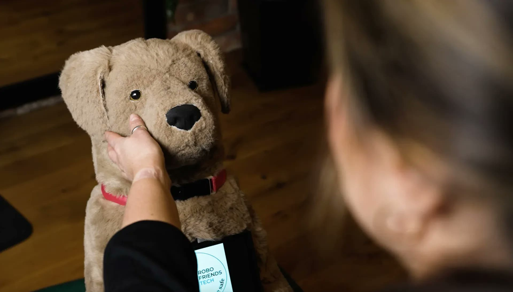
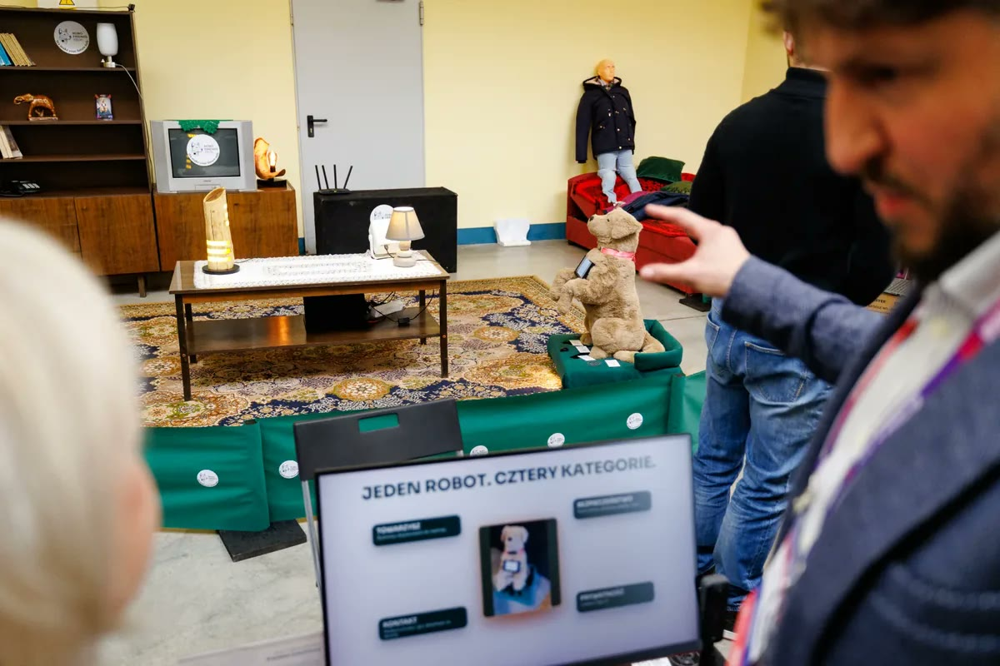
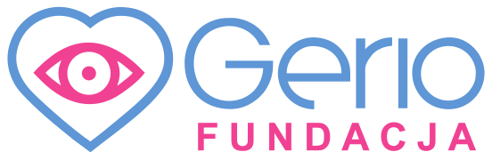
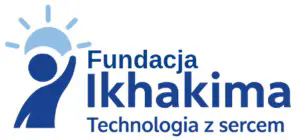
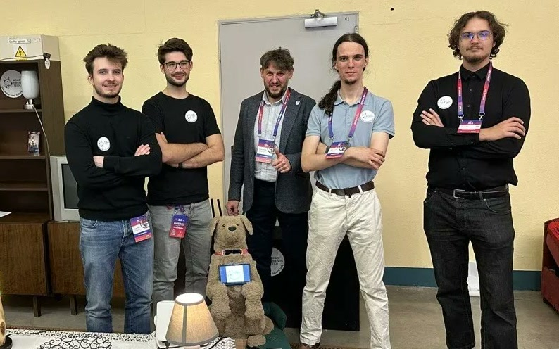
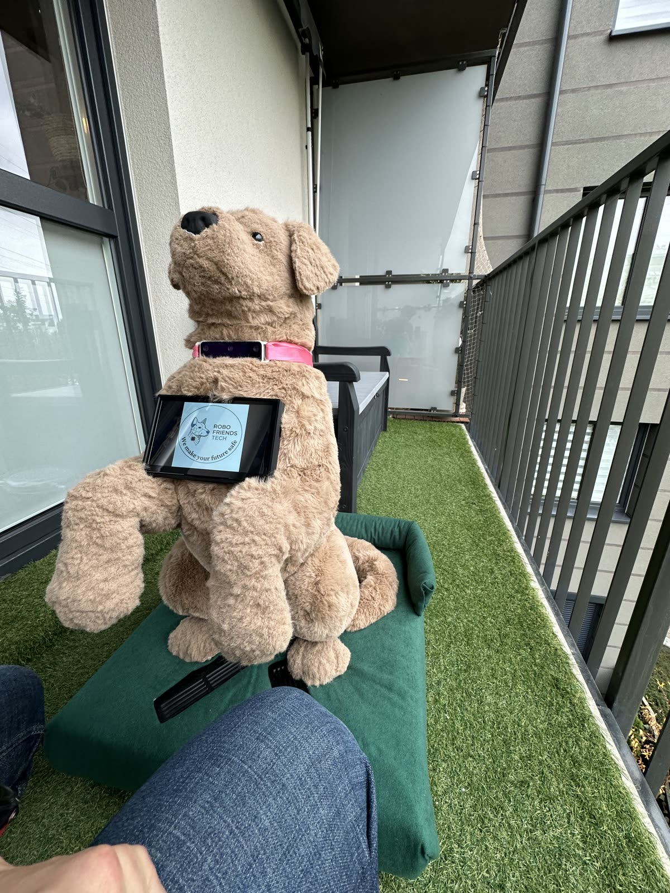
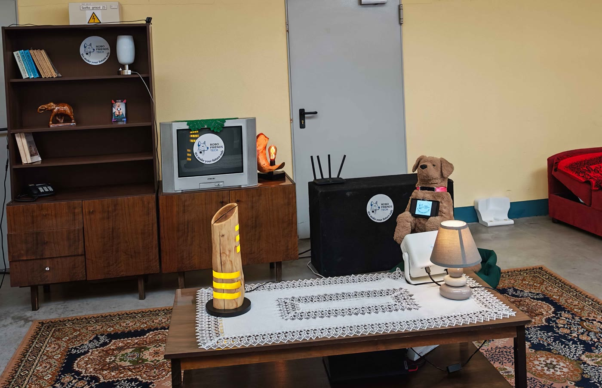

Technologia w służbie najbliższym
We make your future safe
RoboFriend to inteligentny Anioł Stróż: robot towarzysząco-wspierający, który jest i czuwa w tle przez 24h.

STATUS PROJEKTU: Gotowy prototyp w testach z użytkownikami.
Technologia w służbie najbliższym
Poznaj RoboFriend
Wybierz sekcję poniżej, aby dowiedzieć się więcej o projekcie, technologii i sposobach zaangażowania się.
O Projekcie
Wyzwanie, z którym się mierzymy: niezależność bez strachu.
Czytaj więcej →Technologia
Ekosystem czujników i oprogramowania, niewidoczny dla użytkownika.
Czytaj więcej →Zespół
Poznaj ludzi, którzy budują RoboFriend.
Czytaj więcej →Partnerzy
Nasi partnerzy oraz współpraca z firmami z sektora opieki i partnerami strategicznymi.
Czytaj więcej →Nowości
Co słychać przy budowie RoboFriend: prace, testy, wydarzenia.
Czytaj więcej →FAQ
Odpowiedzi na najczęstsze pytania o RoboFriend.
Czytaj więcej →Zarezerwuj
Chcesz być pierwszy? Zgłoś zainteresowanie RoboFriend.
Czytaj więcej →O Projekcie
Wyzwanie, z którym się mierzymy: niezależność bez strachu.
Każdego dnia miliony seniorów na całym świecie stawiają czoła cichemu wrogowi, który odbiera im radość i swobodę życia we własnym domu. To nie jest choroba ani wiek. Strach przed Upadkiem, Strach o nagłe Pogorszenie Stanu Zdrowia, Strach o Izolację i Samotność, Strach przed Technologią, Wstyd przed proszeniem o pomoc.
Ten paraliżujący lęk sprawia, że codzienne, proste czynności, jak samodzielna kąpiel, stają się źródłem ogromnego stresu. Seniorzy zaczynają ograniczać swoją aktywność, obawiając się, że w razie wypadku nikt nie znajdzie ich przez wiele godzin.
Istniejące rozwiązania, takie jak opaski alarmowe, często zawodzą w kluczowych momentach. Trzeba o nich pamiętać, regularnie je ładować, a w chwili kryzysu trafienie w mały przycisk może być niemożliwe. Co więcej, wielu seniorów nie chce ich nosić, bo czują się stygmatyzowani, lub boją się wezwać pomoc z obawy przed fałszywym alarmem.
My wierzymy w inne podejście. Bezpieczeństwo nie powinno być kolejnym obowiązkiem.
Dlatego stworzyliśmy RoboFriend. To nie jest kolejne akcesorium, które trzeba nosić i pilnować. To w pełni niezależny, autonomiczny i inteligentny robot w przyjemnej i miękkiej formie, który po prostu jest i czuwa w tle, całą dobę. Daje poczucie, że pomoc jest zawsze blisko, nawet gdy my jesteśmy daleko, nie odbierając przy tym seniorowi godności i poczucia normalności. Świadomość, że można się do kogoś odezwać i porozmawiać sprawia, że samotność już tak nie doskwiera. Rodzina też ma pewność, że fałszywe alarmy i nagłe sytuacje są pod kontrolą.
Dane demograficzne dla Polski i Europy są jednoznaczne – społeczeństwo się starzeje, a wyzwanie zapewnienia bezpiecznej jesieni życia naszym bliskim rośnie z roku na rok. Nadszedł czas na technologię, która naprawdę rozumie człowieka.

Stoisko RoboFriend na targach Made in Wrocław 2026, urządzone jak salon polskiej seniorki
Demografia i samotność między wizytami
99 mln
osób 65+ w UE, 22% populacji
1,5 mln
brakujących opiekunów i pielęgniarek w Europie
83%
seniorów nie użyło alarmu po upadku w samotności
1 na 5
upadków kończy się ponad godziną na podłodze bez pomocy
1 na 3
seniorów żyje w izolacji społecznej
97%
miejsc w domach opieki zajętych, ponad 20 000 osób w kolejkach do POZ
Źródła: Eurostat, Demography of Europe 2026 · European Ageing Network, Long Term Care 2030 · Zeitschrift für Gerontologie und Geriatrie 2010 · University of Sheffield, The Long Lies Study · WHO Commission on Social Connection 2025 · CRP Wrocław 2026
Głosy rodzin
Wypowiedzi ilustracyjne, zebrane podczas rozmów i wstępnych ankiet z rodzinami seniorów.
„Najbardziej boję się dnia, w którym coś się stanie mamie, a ja się o tym nie dowiem od razu. Robot czuwający w tle daje mi nadzieję na spokojniejsze noce."
„Nie chcę nosić opaski, bo czuję się przez nią chora. Coś, co po prostu jest w domu i nie trzeba o nim pamiętać, brzmi dla mnie dużo lepiej."
„Mieszkam za granicą i nie mogę być przy rodzicach codziennie. Coś takiego jak RoboFriend to dla mnie realne wsparcie, nie kolejny gadżet."
Inwestycja w spokój
Inwestycja, która się zwraca.
Zapewnienie bezpieczeństwa i komfortu bliskim nie musi oznaczać ogromnych, comiesięcznych wydatków. Zobacz, jak koszt RoboFriend wypada w porównaniu z tradycyjnymi formami opieki. Koszty dodatkowych leków i wizyt lekarskich często są konsekwencją późnej reakcji na zdarzenia w domu.
- Niższy koszt niż tradycyjne, comiesięczne formy opieki
- Czuwanie 24 godziny na dobę, bez opóźnionej reakcji
- Mniej nagłych wizyt lekarskich dzięki wcześniejszej reakcji
- Godność i niezależność bliskiej osoby zachowane
Już czas połączyć tradycyjne metody z nowoczesną technologią.
Technologia
Niewidoczna dla użytkownika, a jednak zaawansowana.
W Robo Friends Tech wierzymy, że najlepsza technologia to taka, która jest niewidoczna dla użytkownika. RoboFriend został zaprojektowany, aby być intuicyjnym i przyjaznym towarzyszem, ale w jego wnętrzu kryje się zaawansowany ekosystem czujników, procesorów i unikatowego oprogramowania, które pracują razem, by zapewnić bezpieczeństwo i spokój ducha.
Czujniki
Dyskretne i zintegrowane z robotem. Nie wymagają noszenia.
Czytaj więcej
- Wykrywanie możliwego upadku i powiadamianie opiekuna
- Czujnik dotyku
- Bezdotykowy odczyt tętna
Tętno bez urządzeń do noszenia. RoboFriend odczytuje tętno bezkontaktowo, z wykorzystaniem sygnału Wi-Fi. Nie trzeba pamiętać o zakładaniu i ładowaniu opaski. Odczyty i ich historię można przeglądać w aplikacji, jako element dbania o codzienny dobrostan.
Funkcja odczytu tętna nie jest przeznaczona do celów medycznych, w tym do diagnozowania, leczenia, monitorowania ani zapobiegania chorobom. Służy wyłącznie do celów informacyjnych i ogólnego dobrostanu. W nagłych sytuacjach dzwoń pod numer 112.
Autonomia
Robot samodzielnie porusza się i funkcjonuje w mieszkaniu.
Czytaj więcej
- Pełna autonomia jazdy po mieszkaniu
- Samodzielne dokowanie w stacji ładowania
- Omijanie przeszkód i reagowanie na zmiany w otoczeniu
- Pokonywanie progów do 3,5 cm
- Reagowanie na zdarzenia i codzienne funkcjonowanie z domownikiem
Autonomia jest możliwa dzięki autorskim algorytmom oraz fuzji czujników. Robot łączy aż 3 źródła pozwalające mu na określenie swojej pozycji w otoczeniu. Gdy kończy mu się energia, sam wraca do stacji dokującej.
Oprogramowanie
Autorskie oprogramowanie wykorzystujące zaawansowane AI.
Czytaj więcej
- Łączenie danych z kamer, czujników i mikrofonów w jeden spójny system
- Rozumienie otoczenia i reagowanie w czasie rzeczywistym
- Kluczowe obliczenia lokalnie w robocie
Wszystkie kluczowe obliczenia odbywają się lokalnie w robocie, więc prywatne dane zostają w domu.
Dyskrecja i prywatność
Bez stygmatyzacji, bez podglądu.
Czytaj więcej
- Obraz z kamery nie opuszcza robota podczas codziennego działania
- Opiekun dostaje wyłącznie powiadomienie
- Co dzieje się w domu, zostaje w domu
Wideorozmowy
Bliscy są na wyciągnięcie ręki.
Czytaj więcej
- Bez telefonu i bez technicznych barier
- Rozmowę rozpoczyna się głosem
- Połączenie przychodzące wymaga akceptacji
- Kamera nigdy nie włącza się bez wiedzy domownika
Konwersacja z AI
Gdy potrzebujesz porozmawiać.
Czytaj więcej
- Dedykowany model językowy, który sprawnie prowadzi rozmowę z domownikiem
- Rozumie i pamięta kontekst prowadzonych rozmów
Sterowanie głosem
Robota można obsługiwać w pełni głosem.
Czytaj więcej
- Bez przycisków i aplikacji
- „Zadzwoń do syna”
- „Przyjedź do mnie”
- „Porozmawiajmy”
Podświetlanie drogi
Bezpieczne nocne wstawanie.
Czytaj więcej
- Ciepłe, delikatne światło przy podłodze
- Włącza się, gdy wstajesz w nocy
- Robot czeka w pobliżu sypialni
W planach
Teleporada
Wideokonsultacja z lekarzem bez wychodzenia z domu.
Czytaj więcej
- Integracja z teleporadą medyczną (w przygotowaniu)
- Wideokonsultacja z lekarzem zewnętrznego partnera medycznego
- Usługę medyczną zapewnia uprawniony partner
RoboFriend nie jest wyrobem medycznym i nie służy do diagnozowania ani leczenia. Teleporada będzie usługą uprawnionego partnera medycznego; RoboFriend pełni w niej funkcję komunikatora. W nagłych sytuacjach dzwoń pod numer 112.
Partnerzy
W Robo Friends Tech wierzymy, że zaawansowany hardware potrzebuje silnego, biznesowego serca oraz doświadczenia w pracy z osobami wymagającymi wsparcia i troski. Nasze rozwiązanie jest konsultowane i testowane pod okiem specjalistów.

Fundacja Gerio
Organizacja, która zmienia rynek usług opiekuńczych i rehabilitacyjnych w Polsce. RoboFriend wchodzi do jej ekosystemu jako całodobowe, technologiczne wsparcie podopiecznego. Razem tworzymy bezpieczną przyszłość Silver Economy.
Odwiedź stronę →
Fundacja Ikhakima
Partner wspierający nas doświadczeniem w pracy z osobami wymagającymi wsparcia i troski.
Odwiedź stronę →Zostań partnerem RoboFriend
Prowadzisz firmę opiekuńczą lub działasz w usługach dla seniorów? Sprawdź, jak możemy współpracować.
Dowiedz się więcej →Zbudujmy razem polski AgingTech
Jesteśmy otwarci na rozmowy z partnerami, którzy chcą rozwijać rynek AgingTech i Silver Economy: funduszami VC, aniołami biznesu i firmami z branży.
Dlaczego teraz
99 mln
osób 65+ w UE, 22% populacji
1,5 mln
brakujących opiekunów i pielęgniarek w Europie
Prototyp
gotowy i w testach z użytkownikami
Więcej danych w sekcji O Projekcie.
Gdzie jesteśmy
- Działający prototyp
- Premiera na Made in Wrocław 28.10.2026
- Start testów i pilotaży z seniorami
Więcej w sekcji Technologia.
Czego szukamy
Partnera finansowego i merytorycznego z dostępem do szerokiego sektora w Polsce i UE.
Co możemy pokazać
- Pokaz prototypu na żywo
- Spotkanie z zespołem
- Szczegółowe materiały po kontakcie
Zostań partnerem RoboFriend
Rozwijajmy opiekę domową razem.
Szukamy firm z sektora opieki domowej, które chcą zaoferować podopiecznym nowoczesne wsparcie technologiczne. Zostaw dane, a odezwiemy się w ciągu kilku dni roboczych. Wypełnienie zajmie około 2 minut.
- Nowa usługa i źródło przychodu
- Wsparcie opiekunów między wizytami
- Wyróżnienie technologiczne
- Udział w pilotażach
Co słychać w RoboFriend
Na bieżąco pokazujemy prace nad robotem, testy i wydarzenia, w których bierzemy udział.
Startujemy z testami z użytkownikami
Prototyp RoboFriend trafia do pierwszych testów z seniorami. Wnioski z testów posłużą nam do kolejnych iteracji sprzętu i oprogramowania.
Czytaj artykuł →Synergy Award dla projektu CARE 365
Projekt CARE 365, przygotowany razem z Fundacją Gerio, zdobył Synergy Award w kategorii Biznes x Społeczeństwo.
Czytaj artykuł →RoboFriend zadebiutował na Made in Wrocław
W Hali Stulecia pokazaliśmy działający prototyp RoboFriend. Stoisko urządziliśmy jak salon polskiej seniorki, żeby odwiedzający mogli zobaczyć robota w domowym otoczeniu.
Czytaj artykuł →Startujemy z testami z użytkownikami
Prototyp RoboFriend trafia do pierwszych testów z seniorami. Wnioski z testów posłużą nam do kolejnych iteracji sprzętu i oprogramowania.
[Treść artykułu do uzupełnienia]
Data rozpoczęcia testów, gdzie się odbywają, kto bierze udział, co sprawdzamy, pierwsze wnioski. Docelowo zdjęcie z testów z seniorami (Z23).
Synergy Award dla projektu CARE 365
Projekt CARE 365, przygotowany razem z Fundacją Gerio, zdobył Synergy Award w kategorii Biznes x Społeczeństwo.
[Treść artykułu do uzupełnienia]
Czym jest projekt CARE 365, rola RoboFriend i Fundacji Gerio, kto przyznaje nagrodę, przebieg gali, cytat z zespołu.
RoboFriend zadebiutował na Made in Wrocław
W Hali Stulecia pokazaliśmy działający prototyp RoboFriend. Stoisko urządziliśmy jak salon polskiej seniorki, żeby odwiedzający mogli zobaczyć robota w domowym otoczeniu.
[Treść artykułu do uzupełnienia]
Relacja z targów: reakcje odwiedzających, pokazy na żywo, rozmowy z seniorami i opiekunami, co dalej po premierze. Opcjonalnie galeria zdjęć ze stoiska.
Zespół
Ludzie, którzy budują RoboFriend.

Krystian Skrzypalik
CEO & Founder
Radek Wójcik
Lead Mechanical Engineer
Patryk Dudziński
Lead Robotics Software Engineer
Oliwier Woźniak
Electronics and Sensor Integration Engineer
Bartosz Bareja
Lead AI Engineer
Adam Wąs
Docking Station Engineer
Najczęściej zadawane pytania
Produkt i działanie
To autonomiczny robot-towarzysz dla seniorów, w formie pluszowego psa. Porusza się samodzielnie po domu, rozmawia, przypomina, łączy z bliskimi i może powiadomić opiekuna o możliwym upadku.
Nie. Robota można obsługiwać w pełni głosem, np. „Zadzwoń do syna” albo „Przyjedź do mnie”. Robot ma w standardzie czytelny ekran dotykowy, na którym odbywają się wideorozmowy z bliskimi.
Tak, do korzystania ze wszystkich funkcji robota potrzebne jest połączenie Wi-Fi. Pracujemy nad dodatkowym modułem GSM, który pozwoli korzystać z robota także bez domowego internetu.
Czeka w pobliżu sypialni. Gdy domownik wstaje, włącza ciepłe, delikatne światło przy podłodze.
Tak. Samodzielnie porusza się po domu, omija przeszkody, także te, które pojawią się nagle na jego drodze. Pokonuje dywany i progi o wysokości do 3,5 cm. Gdy kończy mu się energia, sam wraca do stacji dokującej.
Bezpieczeństwo i prywatność
Obraz z kamery jest analizowany w robocie i nie trafia do internetu podczas codziennego działania. Obraz trafia do bliskich tylko podczas wideorozmowy albo w sytuacji, gdy nie ma kontaktu z domownikiem, i tylko jeśli domownik wcześniej się na to zgodził.
Domownik. Każdą funkcję opcjonalną można włączyć lub wyłączyć w dowolnej chwili, a robot nadal działa.
Nie każdy. Robot rozpoznaje sytuacje przypominające upadek i powiadamia wskazanego opiekuna. Może nie zauważyć zdarzenia poza swoim polem widzenia, na przykład w innym pomieszczeniu. Dlatego, gdy przez dłuższy czas nie ma kontaktu z domownikiem, robot sam podjeżdża sprawdzić, czy wszystko w porządku. W nagłych sytuacjach dzwoń pod numer 112.
Nie. RoboFriend nie jest wyrobem medycznym i nie służy do diagnozowania ani leczenia. Odczyt tętna ma charakter informacyjny i wspiera codzienny dobrostan.
Ma miękką, pluszową obudowę i porusza się z niewielką prędkością. Projektujemy go z myślą o spełnieniu norm bezpieczeństwa obowiązujących dla urządzeń domowych.
Rodzina i opiekunowie
Powiadomienia i historię zdarzeń, stan robota oraz historię jego pracy. Przez aplikację można też połączyć się z bliską osobą przez wideorozmowę oraz ustawić przypomnienia, np. o codziennych czynnościach czy ważnych wizytach.
Tak, jeśli wcześniej zgodziła się na tę funkcję. Po kilku nieudanych próbach kontaktu opiekun może skorzystać z podglądu. Podgląd jest zawsze sygnalizowany na robocie.
Zakup i dostępność
Trwają testy z użytkownikami i pilotaże. Zapisz się na listę oczekujących, a powiadomimy Cię o terminach sprzedaży.
Cenę i model zakupu ogłosimy wraz ze startem sprzedaży. Osoby z listy oczekujących dowiedzą się pierwsze.
Sprawdzamy taką możliwość z partnerami, którzy świadczą usługi telemedyczne. Robot pełniłby wtedy funkcję komunikatora, czyli umożliwiałby wideorozmowę z lekarzem, a samą usługę medyczną zapewniałby uprawniony partner. O szczegółach poinformujemy, gdy rozwiązanie będzie gotowe. W nagłych sytuacjach dzwoń pod numer 112.
Prowadzimy pilotaże z partnerami z sektora opieki. Osoby z listy oczekujących informujemy o nowych pilotażach, a firmy opiekuńcze mogą zgłosić chęć testów w formularzu partnerskim.
Dla firm
Każdą współpracę i pilotaż przygotowujemy indywidualnie. Zostaw zgłoszenie w formularzu partnerskim.
Chcesz być pierwszy?
Zarezerwuj swojego RoboFrienda!
Zapewnij sobie miejsce w pierwszej kolejności do zakupu RoboFriend. Wypełnienie formularza jest w pełni darmowe i niezobowiązujące, a gwarantuje Ci:
- Informację o starcie przedsprzedaży przed innymi
- Dostęp do specjalnej oferty cenowej dla pierwszych wspierających projekt
- Roczny abonament na pakiet premium (o wartości ponad 1900 zł) w cenie urządzenia

Polityka prywatności serwisu robofriendstech.pl
Obowiązuje od: [data publikacji]
W tej polityce wyjaśniamy, jakie dane osobowe zbieramy w serwisie robofriendstech.pl, w jakim celu, jak długo je przechowujemy i jakie prawa Ci przysługują. Polityka dotyczy serwisu internetowego, formularzy kontaktowych i naszych profili w mediach społecznościowych. Nie dotyczy danych przetwarzanych przez robota RoboFriend – zasady te opisuje odrębna dokumentacja dostarczana z produktem.
1.1. Administrator danych
Administratorem Twoich danych osobowych jest Robo Friends Tech prosta spółka akcyjna z siedzibą we Wrocławiu, ul. Skarbowców 82D/3A, 53-025 Wrocław, wpisana do rejestru przedsiębiorców Krajowego Rejestru Sądowego prowadzonego przez Sąd Rejonowy dla Wrocławia-Fabrycznej we Wrocławiu, IX Wydział Gospodarczy KRS pod numerem KRS 0001198339, NIP 8993037862, REGON 542936437 (dalej: „Administrator” lub „my”).
W sprawach dotyczących danych osobowych możesz się z nami kontaktować:
- e-mailowo: dane-osobowe@robofriendstech.pl
- listownie: na adres siedziby, z dopiskiem „Dane osobowe”
Administrator nie wyznaczył inspektora ochrony danych.
1.2. Cele i podstawy prawne przetwarzania
| Kiedy zbieramy dane | Jakie dane | Cel | Podstawa prawna (RODO) | Jak długo |
|---|---|---|---|---|
| Formularz „Zostań partnerem” | nazwa firmy, NIP, strona www, imię i nazwisko, stanowisko, e-mail, telefon, lokalizacja i skala działalności firmy, treść wiadomości | odpowiedź na zgłoszenie i rozmowy o współpracy biznesowej | art. 6 ust. 1 lit. f – prawnie uzasadniony interes: nawiązanie i prowadzenie współpracy | do zakończenia rozmów, a następnie 24 miesiące; jeśli zawrzemy umowę – przez czas jej trwania i okres przedawnienia roszczeń |
| Formularz „Lista oczekujących” | imię, e-mail, telefon (opcjonalnie), miejscowość (opcjonalnie), odpowiedzi w formularzu | informowanie o dostępności RoboFrienda, terminach sprzedaży i pilotażach | art. 6 ust. 1 lit. a – zgoda | do wycofania zgody lub do zakończenia przedsprzedaży, nie dłużej niż 24 miesiące |
| Formularz dla inwestorów | imię i nazwisko, organizacja, typ inwestora, e-mail, wielkość inwestycji (opcjonalnie), treść wiadomości | odpowiedź na zapytanie i rozmowy inwestycyjne | art. 6 ust. 1 lit. f – prawnie uzasadniony interes: pozyskanie finansowania | do zakończenia rozmów, a następnie 24 miesiące |
| Kontakt e-mailowy lub telefoniczny | dane podane w wiadomości | odpowiedź na wiadomość | art. 6 ust. 1 lit. f – prawnie uzasadniony interes: komunikacja z osobami, które się z nami kontaktują | do zakończenia korespondencji, a następnie 24 miesiące |
| Newsletter | e-mail, imię | wysyłka informacji o produkcie i firmie | art. 6 ust. 1 lit. a – zgoda | do wycofania zgody |
| Analityka i cookies inne niż niezbędne | identyfikatory plików cookies, adres IP, dane o urządzeniu i aktywności w serwisie | statystyki odwiedzin, ulepszanie serwisu | art. 6 ust. 1 lit. a – zgoda, w związku z art. 399 Prawa komunikacji elektronicznej | zgodnie z Polityką cookies |
| Profile w mediach społecznościowych | nazwa profilu, komentarze, reakcje, wiadomości | prowadzenie profili, komunikacja z obserwującymi | art. 6 ust. 1 lit. f – prawnie uzasadniony interes: promocja marki | do usunięcia treści lub zgłoszenia sprzeciwu |
| Wszystkie powyższe | dane niezbędne do wykazania okoliczności | ustalenie, dochodzenie lub obrona roszczeń | art. 6 ust. 1 lit. f – prawnie uzasadniony interes | do upływu terminu przedawnienia roszczeń |
Podanie danych jest dobrowolne. Bez danych oznaczonych w formularzu jako obowiązkowe nie będziemy mogli odpowiedzieć na zgłoszenie.
Zgodę możesz wycofać w dowolnym momencie, np. klikając link w wiadomości e-mail, pisząc na dane-osobowe@robofriendstech.pl albo zmieniając ustawienia cookies. Wycofanie zgody nie wpływa na zgodność z prawem przetwarzania, którego dokonano przed jej wycofaniem.
1.3. Odbiorcy danych
Twoje dane mogą otrzymać podmioty, które pomagają nam prowadzić serwis i działalność. Przetwarzają one dane na nasze polecenie, na podstawie umowy powierzenia przetwarzania danych:
- OVH Sp. z o.o. z siedzibą we Wrocławiu, ul. Powstańców Śląskich 9, 53-332 Wrocław, NIP 8992520556, REGON 933029040 (OVHcloud) – w zakresie:
- hostingu serwisu i bazy danych, w tym obsługi i przechowywania danych przesłanych przez formularze na stronie; dane są przechowywane w centrach danych na terenie Unii Europejskiej,
- obsługi poczty e-mail i korespondencji,
- wysyłki wiadomości e-mail,
- statystyk serwisu, wyłącznie po wyrażeniu zgody.
- podmioty świadczące nam usługi prawne, księgowe i doradcze – w zakresie niezbędnym do tych usług
Dane mogą też otrzymać organy publiczne, jeżeli wymagają tego przepisy prawa.
1.4. Przekazywanie danych poza Europejski Obszar Gospodarczy
Zasadniczo przetwarzamy dane w EOG. Niektórzy dostawcy lub ich podwykonawcy mogą przetwarzać dane poza EOG, np. w USA. Dzieje się to wyłącznie na podstawie mechanizmów z rozdziału V RODO: decyzji Komisji Europejskiej stwierdzającej odpowiedni stopień ochrony (np. EU-US Data Privacy Framework) albo standardowych klauzul umownych zatwierdzonych przez Komisję. Możesz poprosić nas o kopię tych zabezpieczeń.
1.5. Twoje prawa
Masz prawo do:
- dostępu do swoich danych i otrzymania ich kopii (art. 15 RODO)
- sprostowania danych (art. 16 RODO)
- usunięcia danych (art. 17 RODO)
- ograniczenia przetwarzania (art. 18 RODO)
- przenoszenia danych – gdy przetwarzamy je na podstawie zgody lub umowy (art. 20 RODO)
- sprzeciwu wobec przetwarzania opartego na prawnie uzasadnionym interesie (art. 21 RODO); jeśli przetwarzamy dane na potrzeby marketingu bezpośredniego, po Twoim sprzeciwie przestajemy to robić bez wyjątków
- wycofania zgody w dowolnym momencie (art. 7 ust. 3 RODO)
Aby skorzystać z tych praw, napisz na dane-osobowe@robofriendstech.pl. Odpowiemy bez zbędnej zwłoki, nie później niż w ciągu miesiąca.
Masz też prawo wnieść skargę do Prezesa Urzędu Ochrony Danych Osobowych (ul. Stawki 2, 00-193 Warszawa, www.uodo.gov.pl), jeśli uznasz, że przetwarzamy Twoje dane niezgodnie z prawem.
1.6. Profile w mediach społecznościowych
Prowadzimy profile w serwisach Facebook i Instagram („Robo Friends Tech”, „robofriendstech”). Przy profilach na Facebooku jesteśmy współadministratorem danych razem z Meta Platforms Ireland Limited w zakresie statystyk profilu. Zasady współadministrowania określa Page Insights Controller Addendum. Zgodnie z nim to Meta odpowiada za udzielanie informacji o przetwarzaniu danych do statystyk i realizację Twoich praw w tym zakresie, a my przekazujemy Meta Twoje żądania, jeśli trafią do nas. Naszą podstawą prawną jest prawnie uzasadniony interes (art. 6 ust. 1 lit. f RODO) w postaci prowadzenia profili i promocji marki. W pozostałym zakresie Meta przetwarza Twoje dane jako odrębny administrator, zgodnie z Polityką prywatności Meta, która obejmuje Facebooka i Instagrama.
1.6a. Czy będziemy wysyłać Ci informacje handlowe
Informacje o RoboFriendzie i naszej ofercie wysyłamy e-mailem lub SMS-em tylko wtedy, gdy się na to zgodzisz. Zgodę możesz wycofać w każdej chwili, np. linkiem w stopce wiadomości. Odpowiedź na Twoje zapytanie albo wiadomość w sprawie rozpoczętej przez Ciebie współpracy nie jest informacją handlową.
1.7. Zautomatyzowane decyzje i profilowanie
Nie podejmujemy wobec Ciebie decyzji opartych wyłącznie na zautomatyzowanym przetwarzaniu, w tym profilowaniu, które wywoływałyby skutki prawne lub w podobny sposób istotnie na Ciebie wpływały.
1.8. Bezpieczeństwo danych
Stosujemy środki techniczne i organizacyjne odpowiednie do ryzyka, w tym szyfrowane połączenie z serwisem (HTTPS), ograniczony dostęp do danych i umowy powierzenia z dostawcami.
1.9. Pliki cookies
Zasady korzystania z plików cookies opisuje Polityka cookies (Polityka cookies). Ustawienia cookies możesz zmienić w każdej chwili, klikając „Ustawienia cookies” w stopce serwisu.
1.10. Zmiany polityki
Politykę aktualizujemy, gdy zmieniają się przepisy, nasze usługi lub narzędzia. Aktualna wersja jest zawsze dostępna na tej stronie, z datą obowiązywania na górze.
Kontakt
Masz pytania? W razie jakichkolwiek wątpliwości skontaktuj się z nami, chętnie odpowiemy.
